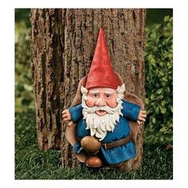

Los gnomos son seres mitológicos que se consideran parte del folclore y las leyendas de muchas culturas. En general, se los describe como pequeñas criaturas humanoides que habitan en la naturaleza, especialmente en bosques y jardines. Los gnomos suelen ser retratados como seres amigables, con aspecto humanoide pero de estatura reducida, barbas largas y puntiagudas y una conexión especial con la tierra y las plantas. A menudo se les atribuyen poderes mágicos relacionados con la protección de la naturaleza y los tesoros ocultos. A lo largo de la historia, los gnomos han sido vistos como guardianes de los secretos de la naturaleza y se cree que pueden traer buena suerte a aquellos que les muestran respeto y amabilidad. En resumen, los gnomos son seres míticos que encarnan la conexión entre la humanidad y el mundo natural, llenando nuestras historias y creencias con su encanto y magia.
